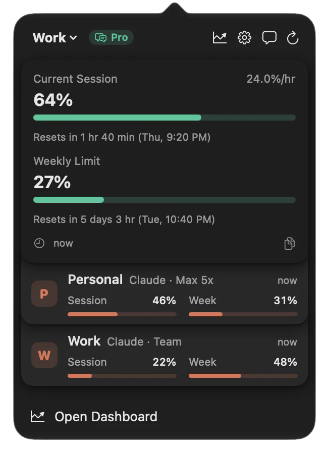

先看哪一份额度正在消耗
一次长任务中断，往往直到收到限流提示才知道本周额度快用完了。Usage把账户返回的会话和每周读数放进常驻菜单栏，并在4.0加入ChatGPT账户的Codex读数。它提供简洁、详细与图表三种账户堆叠方式，让个人和工作账户可以并排查看。这里应保留账户和额度窗口的名称：两家服务的百分比并不代表相同数量的可用工作，也不能把所有模型调用汇成一个可交换余额。对用户而言，较直接的帮助是在开始下一段工作前看见余量，而不是在中断后才回到网页查原因。
Usage for Claude + ChatGPT · 软件更新 · PH发现

一次长任务中断，往往直到收到限流提示才知道本周额度快用完了。Usage把账户返回的会话和每周读数放进常驻菜单栏，并在4.0加入ChatGPT账户的Codex读数。它提供简洁、详细与图表三种账户堆叠方式，让个人和工作账户可以并排查看。这里应保留账户和额度窗口的名称：两家服务的百分比并不代表相同数量的可用工作，也不能把所有模型调用汇成一个可交换余额。对用户而言，较直接的帮助是在开始下一段工作前看见余量，而不是在中断后才回到网页查原因。
官网描述可以用自然语言提出预警要求，由Apple Intelligence在设备上解析成规则，再检查保存。条件可以围绕使用比例、重置时刻和接近限额的速度，并指定当前或多个账户。相比让人找到若干下拉菜单，文字入口更接近用户想要的提醒；但“还剩百分之二十”与“已用百分之二十”很容易混淆。界面把解析后的条件留给人确认，比只回复设置成功更有帮助。没有可重复账户测试，仍不知道提醒延迟、后台刷新及边界值是否符合所有人的预期，预警也不会替用户暂停正在运行的代理。
开发者隐私页说明，Claude登录会话放在Keychain，启用iCloud Keychain时可能随其他设备同步；ChatGPT访问令牌则保存在各设备上，不同步，换设备需要重新登录。账户列表与历史又有自己的iCloud同步路径，不能笼统写成所有数据都只留在一台电脑。应用直接向对应服务获取读数，仍有诊断分析服务。用户退出ChatGPT账户时会删除本机令牌并请求撤销。以上是作者公布的实现边界，没有独立审计；是否愿意让第三方工具维持账户会话，应由用户结合自己的账户管理要求决定。
应用的单账户菜单栏、小组件和基础提醒可以免费使用；多账户、完整历史及若干开发者统计属于Pro。所读美国商店同时列出不同月费项目，不能随意挑最低一个写成所有新用户当前价格。Mac要求macOS十五或以上，手机与平板要求iOS或iPadOS二十六点二，手表要求watchOS二十六点四，旧设备可能无法采用。官方索引把4.0介绍列在10月29日，因此一周回看比“今天首发”准确。试用时最好先核对一次官方账户页面与小组件读数，再看提醒是否实际减少无准备的中断，而不是只看图表是否丰富。